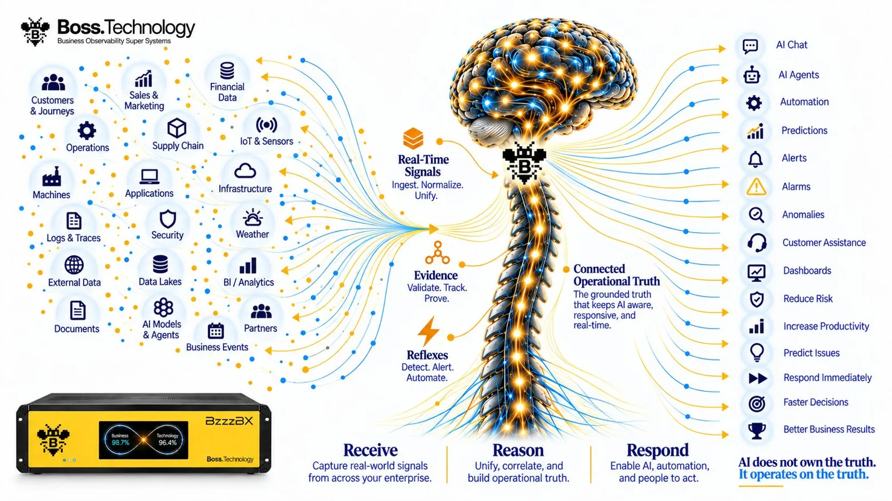
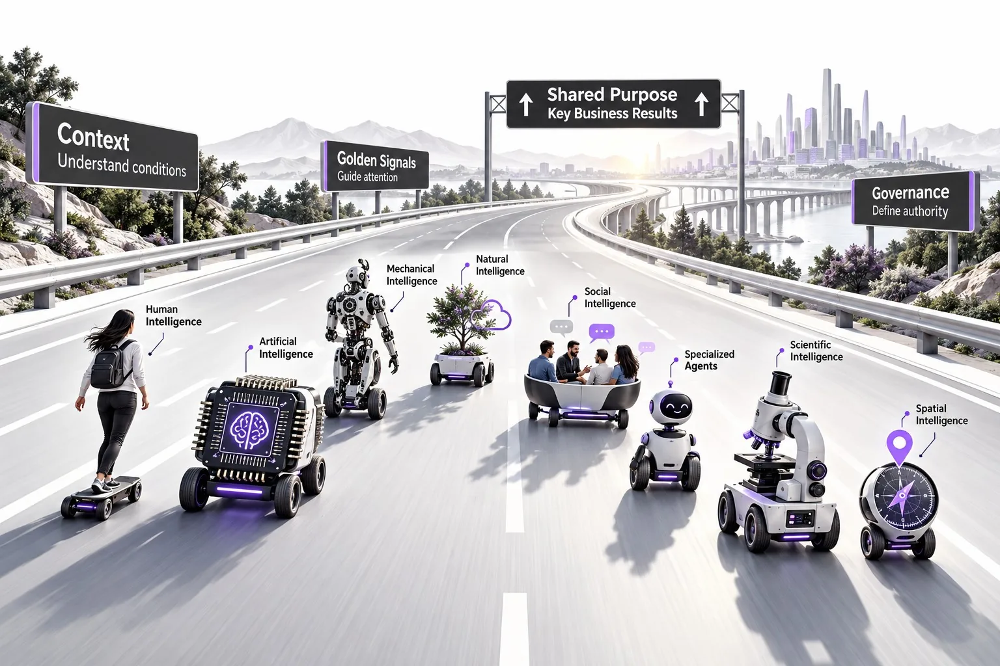

Un martes por la mañana, el agente de abastecimiento de una empresa de distribución hace exactamente lo que se le pidió. Detecta que un cliente clave está por quedarse sin producto, revisa el inventario, encuentra unidades disponibles en el centro de distribución del norte y programa un despacho urgente. Misión cumplida, en minutos y sin intervención humana.
Lo que el agente no sabía es que esa misma mañana la planta del norte había perdido a un tercio del turno por ausentismo, que dos de sus camiones estaban en mantenimiento y que el despacho urgente desplazaba otros cuatro pedidos comprometidos con clientes de mayor margen. Nadie le había dado ese contexto. No estaba en su misión.
El resultado: una tarea resuelta y un problema mayor creado. Y lo más inquietante es que, mirando solo el indicador del agente, todo se veía bien.
El agente que hizo bien su trabajo
La escena se repite cada vez que una empresa lleva la inteligencia artificial de la demostración a la operación. El piloto funciona con datos de ejemplo, los asistentes responden con soltura y los agentes completan sus tareas. Pero cuando el sistema toca la realidad del negocio, aparece una pregunta que ningún modelo puede responder por sí solo: ¿qué más se está moviendo mientras yo actúo?
El problema no es la inteligencia del agente. Los modelos actuales razonan, planifican y usan herramientas con una capacidad que hace dos años parecía lejana. El problema es lo que el agente puede ver. Y en la mayoría de las empresas, lo que puede ver es una fracción: los sistemas a los que alguien lo conectó, los permisos que alguien le dio, los datos que logra reunir en el momento.
Un agente puede cumplir su misión a la perfección y, al mismo tiempo, dañar el negocio que debía servir.
Un cerebro sin cuerpo
Hay una imagen que usamos con frecuencia en Boss.Technology: la IA sin observabilidad es como un cerebro sin cuerpo. Un cerebro, por brillante que sea, depende de sus sentidos para moverse en el mundo. Sin ojos, sin tacto, sin memoria de lo que acaba de ocurrir, solo puede especular.
Lo mismo le pasa a la IA dentro de una empresa. Un modelo sabe mucho del mundo, pero casi nada de lo que ocurre en tu operación en este momento. Sin señales en vivo, sin contexto de negocio y sin historia, responde con lo que tiene a mano: documentos sueltos, el reporte de la semana pasada o conocimiento general. Ahí aparecen las respuestas genéricas, los costos que se disparan y el riesgo de que invente.
La observabilidad de negocio es, en esta metáfora, el sistema nervioso: recibe cada señal de la empresa, le da contexto, la relaciona con las demás y la mantiene disponible para quien necesite razonar sobre ella.
Dos maneras de convertir actividad en acción
Hoy conviven dos formas de llevar la IA a la operación. Vale la pena nombrarlas, porque la diferencia entre ambas define buena parte del valor que una empresa obtendrá de su inversión.
El enfoque agéntico: la misión primero
En el enfoque agéntico, cada asistente, agente o grupo de agentes recibe una misión y arma su propio contexto para cumplirla. Consulta el ERP, revisa el correo, lee pedidos, solicita permisos, reconcilia lo que encuentra y entrega una respuesta o ejecuta una acción. Es un modelo poderoso para investigar, automatizar tareas acotadas o desarrollar.
Pero cuando las misiones se multiplican, la arquitectura se convierte en un laberinto. Cada agente repite la búsqueda y la reconciliación de datos. Los permisos y los registros de decisión quedan dispersos entre herramientas. Las integraciones se vuelven dependencias. Y cada silo termina siendo una caja negra: se mide el resultado, pero no se inspeccionan las entradas, las decisiones ni la autoridad con la que se actuó.
Medir el desempeño de un agente no es lo mismo que tener control sobre él.
El enfoque Act-céntrico: la acción, sobre una comprensión compartida
El enfoque Act-céntrico (de action centric, centrado en la acción) invierte el orden. Primero existe una comprensión compartida de la organización, y las misiones y acciones se construyen sobre ella. Cada señal de la empresa entra una sola vez, recibe contexto de negocio y se correlaciona con las demás en tiempo real. Personas, aplicaciones y agentes parten de la misma inteligencia central, en lugar de reconstruirla en cada tarea.
¿Cómo completo esta tarea? Cada misión arma su contexto, sus permisos y su registro.
¿Esta acción encaja con las condiciones, dependencias, riesgos y objetivos de toda la empresa?

Ambos enfoques no son excluyentes. Los agentes también razonan y pueden compartir contexto. La diferencia está en la amplitud, la continuidad y el gobierno de ese contexto: si cada agente ve su parte, o si todos trabajan sobre el negocio completo.
Razonar sobre todo el negocio
Volvamos al agente del martes. Con una inteligencia central de por medio, su pregunta no habría sido solo cómo abastecer al cliente, sino si ese despacho tenía sentido dadas las condiciones del momento: la capacidad de la planta, los camiones disponibles, los pedidos comprometidos y su margen. Habría propuesto otra cosa, o habría escalado la decisión con la evidencia completa.
Para que ese razonamiento sea posible, la inteligencia necesita dos referencias:
- Señales doradas: las condiciones que merecen atención. No son todos los datos, sino los que indican que algo relevante está cambiando.
- Resultados clave de negocio (KBR): lo que la organización busca lograr. Conectan la actividad operativa con el propósito del negocio y permiten verificar si una acción produjo el efecto esperado.
Con ambas, una empresa de operaciones puede detectar presión en el abastecimiento frente a sus compromisos, priorizar pedidos y verificar el cumplimiento contra el KBR. Una red de sedes distribuidas puede dejar que las señales doradas indiquen qué locales necesitan atención, autorizar la acción y observar el resultado, en lugar de revisar sitio por sitio el equipamiento, el personal, la seguridad y el clima.
Distintas inteligencias, un mismo propósito
Una empresa no tiene una sola inteligencia. Tiene muchas, y cada una aporta una perspectiva distinta. El juicio humano entiende matices, relaciones y prioridades. La IA aplicada interpreta grandes volúmenes de información. Las máquinas reportan su estado y su desempeño. Los sistemas vivos, como el clima o los cultivos, imponen condiciones. Las relaciones sociales mueven la conducta de clientes y equipos. Los agentes especializados resuelven tareas concretas.

La imagen de la carretera resume la idea. Todas esas inteligencias viajan en la misma dirección, pero solo llegan juntas si comparten el camino. Los letreros importan tanto como los vehículos: el contexto permite entender las condiciones, las señales doradas indican dónde poner la atención, el gobierno define quién puede hacer qué, y el propósito compartido, expresado en KBR, marca el destino.
Conciencia continua
A esta comprensión que se desarrolla en el tiempo la llamamos conciencia continua: el modo en que una organización observa la realidad, conecta contexto, aprende de la experiencia y guía la acción con propósito. Cada acción y cada resultado observado amplían esa comprensión; la exploración y la experimentación agregan nuevas perspectivas.
Conviene precisarlo: hablamos de un concepto organizacional y de arquitectura. Describe una comprensión que evoluciona, no una conciencia subjetiva de las máquinas ni un reentrenamiento automático de modelos.
La economía del contexto preparado
Hay un argumento que suele pasar desapercibido en las conversaciones sobre IA: el costo. Cuando cada agente debe buscar, reunir y reconciliar información por su cuenta, las misiones complejas exigen modelos grandes, muchas llamadas entre herramientas y tiempo de espera. A medida que crecen las misiones, crecen también las consultas a los sistemas de origen.
Cuando el contexto llega preparado, la ecuación cambia. La inteligencia central procesa las señales de forma continua y la IA se concentra en interpretar un problema acotado. Eso tiene consecuencias concretas:
- Modelos más livianos: un modelo más pequeño, incluso local, basta para interpretar y responder.
- Menor costo: menos tokens, menos llamadas, menos trabajo repetido de IA.
- Velocidad: el contexto ya está listo; la frescura depende de la llegada de las fuentes, no de una nueva búsqueda.
- Escala: una misma inteligencia sirve a equipos y agentes; se planifica la ingesta y el almacenamiento, no la orquestación de cada misión.
- Soberanía: el cliente controla el despliegue y sus datos; el modelo puede correr en su propia infraestructura.
Gobierno: la IA propone, los flujos ejecutan
Conectar la IA a la operación real exige control, y el control no puede ser un agregado de último momento. Las organizaciones de seguridad como OWASP ya identifican riesgos específicos de la IA generativa, entre ellos la agencia excesiva (cuando un sistema tiene más autonomía o permisos de los que debería) y la inyección de instrucciones. Con misiones dispersas, ambos riesgos se multiplican.
En BzzzBX, Frost Bridge delimita a qué datos y herramientas accede cada asistente o agente, y las políticas definen qué puede hacer. Los agentes razonan y proponen; solo flujos deterministas, auditables y con límites ejecutan acciones, con umbral de confianza, evidencia adjunta, aprobación humana y control de parada.
Frost Bridge · acceso con alcance definido
- Asistentes de IA
- Copilotos
- Agentes
- Alcance por agente
- Políticas de acción
- Registro de cada consulta
BzzzBX
- ✓Ventas y pedidosPermitido
- ✓InventarioPermitido
- ✕Datos personalesBloqueado
- ✕FinanzasFuera de alcance
Trabajar sobre evidencia reduce el riesgo de alucinación, pero los datos y las decisiones siguen requiriendo validación. Por eso la trazabilidad conecta cada acción con la condición que la originó, la fuente, el responsable y la aprobación, y registra el resultado observado.
Hacia dónde ir
La recomendación no es abandonar los agentes. Es ubicarlos donde rinden mejor y darles el contexto que necesitan:
- Usa agentes para investigación, desarrollo y misiones variadas, con límites explícitos de acceso y ejecución.
- Construye las misiones que tocan la operación sobre una inteligencia compartida, con acción gobernada y objetivos de la organización.
- Mide cada acción contra los resultados de negocio, no solo contra la tarea asignada.
Con esa base, la IA deja de ser un experimento aislado y se convierte en una capacidad del negocio: chat interno que responde con evidencia, agentes que vigilan señales doradas y proponen acciones antes de que el problema escale, copilotos por área que trabajan sobre la misma verdad, predicciones de demanda, fallas o fuga de clientes, y automatización con trazabilidad completa.
La IA no es dueña de la verdad. Opera sobre la verdad.
Completar la misión ya no basta. La pregunta que separa a las empresas que obtienen valor de la IA de las que acumulan pilotos es otra: si cada acción entiende sus consecuencias en toda la organización. La observabilidad de negocio es lo que hace posible esa respuesta.